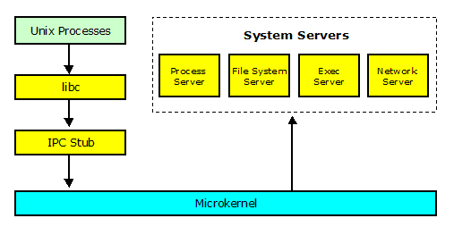
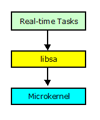

|
|
An Open Source, Royalty-free, Real-time Operating System |
Prex Home >
Document Index >
Application Programming Guide
|
|||
Prex Home >
Document Index >
Application Programming Guide
|
|||
This document describes how to make a user application for Prex.
For a full description of the Prex application interface, see the following documents.
Prex supports the following two different types of application:
They use different startup code, different C library and different Makefile.
The following table shows the difference between these task types.
| - | Real-time Task | Unix Process |
|---|---|---|
| Task Priority | High | Low |
| Loaded by | Kernel | Exec Server |
| Loaded at | Boot | Runtime |
| UNIX System Calls | Not supported | Supported |
| File Access | Raw I/O | Buffered I/O |
| C library | Limited functions (libsa) | Full functions (libc) |
| Server Requirement | No need any servers | boot, fs, proc, exec |
| Privileged Operations | Allowed | Limited |
| Media | Stored in boot file system | Stored in any file systems |
There exist two different C libraries for applications.
Mmost POSIX services are provided by the system servers running in the user mode. So, an application must send an IPC message to the system servers to access POSIX interface. Prex's libc includes the IPC messaging stub for the POSIX service, and so, applications do not care about IPC transmission (Figure 1).

Figure 1. Structure of libc
Prex's libc is derived from *BSD, but it's fully optimized for low footprint system.
The stand-alone C library does not require any system servers. The library supports only limited POSIX functions. There are minimum stdio routines which access the I/O device directory via microkernel (Figure 2). It does not support any Unix system calls.

Figure 2. Structure of libsa
Native real-time tasks and POSIX applications require different Makefiles to be compiled.
TASK= hello.rt include $(SRCDIR)/mk/task.mk
PROG= hello include $(SRCDIR)/mk/prog.mk
Just run make tool at the target source directory.
$ make
Note: The detailed information for the Prex tool chain is described in Prex Build Guide.
All native real-time tasks are loaded by the kernel at boot time. On the other hand, POSIX applications are loaded by the exec server at runtime. In addition, POSIX applications require system servers to be loaded.
To setup a native real-time task to be loaded at boot time, it must be registered as a boot task in the configuration file named /conf/etc/tasks.mk. In order to load "hello" program at boot time, the following line will be added to the configuration file.
TASKS+= $(SRCDIR)/usr/test/hello/hello.rtThe application is executed immediately after the kernel initialization with this setting.
POSIX applications require that the following servers are loaded in the system.
To load these servers at boot time, the following lines must be added in the configuration file named /conf/etc/task.mk.
TASKS+= $(SRCDIR)/usr/server/boot/boot TASKS+= $(SRCDIR)/usr/server/proc/proc TASKS+= $(SRCDIR)/usr/server/exec/exec TASKS+= $(SRCDIR)/usr/server/fs/fs
A POSIX application can be stored in any file system. The following line in /conf/etc/files.mk will add the "hello" application into the boot file system.
FILES+= $(SRCDIR)/usr/test/hello/hello
The registered files in the boot file system will appear under the directory named "/boot" on the target system. Then, the "hello" application can be executed from the shell.
[prex:/boot]# ls init cmdbox hello [prex:/boot]# hello Hello World! [prex:/boot]#
If the target application must require privileged operations, an appropriate task capability must be set in the security configuration file (/conf/etc/security).
This is a sample to create and run a new thread in the same task.
int
thread_run(void *start, void *stack, thread_t *th)
{
thread_t t;
int err;
if ((err = thread_create(task_self(), &t)) != 0)
return err;
if ((err = thread_load(t, start, stack)) != 0)
return err;
if ((err = thread_resume(t)) != 0)
return err;
*th = t;
return 0;
}
The buffer for stack must be prepared by the parent thread.
The entry point for a thread takes the following form.
void
thread_entry(void)
{
...
}
int
main()
{
timer_sleep(500, 0);
}
This is a sample to show a message per 100msec starting after 5sec.
int
main()
{
int count = 0;
sys_log("periodic timer test program\n");
/* Setup timer */
timer_periodic(thread_self(), 5000, 100);
while (count++ < 5) {
timer_waitperiod();
sys_log("Hello!\n");
}
/* Cancel timer */
timer_periodic(thread_self(), 0, 0);
return 0;
}
The Prex task can provide one exception handler for each task. The exception handler must call exception_return() at the end of the handler.
static void
my_exception(int code)
{
printf("Get exception code=%x\n", code);
switch (code) {
...
}
exception_return();
}
The exception handler must be registered to the kernel by using exception_setup(). If the argument of exception_setup() is NULL, the previously used exception handler will be uninstalled.
int
main(int argc, char *argv[])
{
/* Install the exception handler */
exception_setup(my_exception);
...
/* Uninstall the exception handler */
exception_setup(NULL);
return 0;
}
An application can send a specific exception to the task.
exception_raise(task, SIGTERM);
The task must have an appropriate capability to send an exception.
timer_alarm() send a timer exception (SIGALRM) to the caller task at the specified time interval. The following sample programs to send an alarm exception in 500msec interval.
timer_alarm(500, 0);
The Prex kernel provides some raw I/O operations for devices. It includes open/close/read/write/ioctl.
The following code shows how to access the device from the application.
int
main(int argc, char *argv[])
{
device_t console_dev;
char buf[] = "ABCDEFGHIJKLMN";
size_t len;
/*
* Open device
*/
if ((device_open("console", 0, &console_dev) != 0)
sys_log("device open err!\n");
/*
* Display 'ABCDE'
*/
len = 5;
device_write(console_dev, buf, &len, 0);
/*
* Close device
*/
if (device_close(console_dev) != 0)
sys_log("device close err!\n");
return 0;
}
The Prex kernel supports the message log service for applications. The following service will display a message to the diagnostic port via the kernel.
int sys_log(const char *msg);
Note: This service is available only when the kernel is built with a debug option.
The panic service is generally used in the kernel mode to process unrecoverable errors. In case of Prex, this service is exported to the user mode applications in order to track the fatal condition caused by system tasks.
Prex provides the following kernel API.
void sys_panic(const char *msg);
The kernel behavior for this service is different depending on its build mode.
User mode panic: task:sleep thread:8000a7d4 test panic! ============================ Trap 3: Breakpoint ============================ Trap frame 8000ab18 error 0 eax 0000000d ebx 80009f34 ecx 00000000 edx 0000053b esi 00000001 edi 08050754 eip 800104ed esp 8000ab18 ebp 8000ab6c eflags 00000002 cs 00000010 ss 80000018 ds 80000018 es 80010018 esp0 8000abb4 >> interrupt is disabled >> Oops! it's kernel mode now!!! >> task=sleep (id:80009f34) Stack trace: 0804a472 0804a3a1 0804810c 080480aa
This service may be useful for the application developer to track the error conditions.